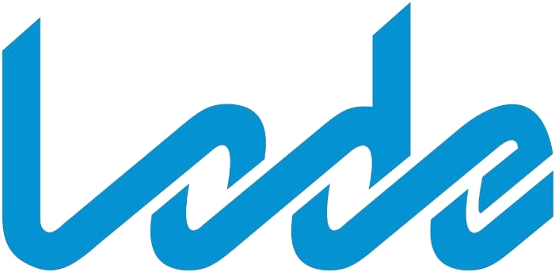
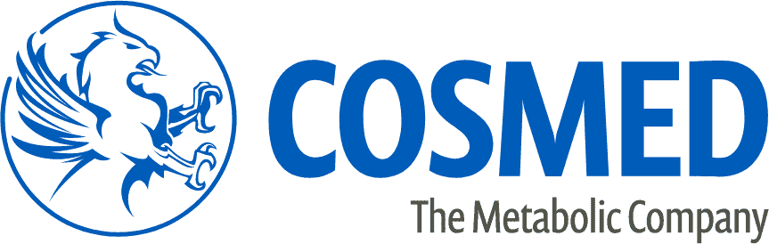
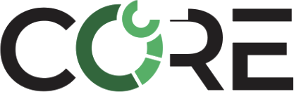
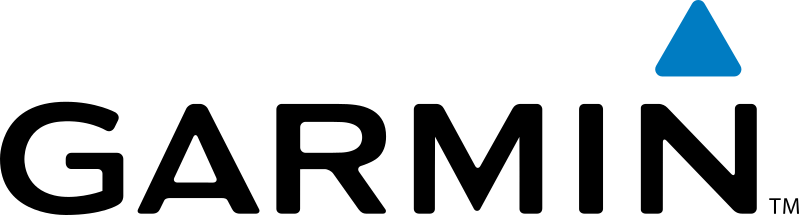
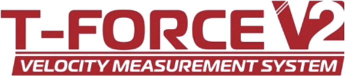
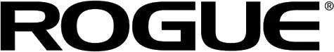

Medimos tu respuesta metabólica y neuromuscular al ejercicio para convertir los datos en mejor rendimiento.
Medimos cómo responde tu organismo al esfuerzo —oxígeno, umbrales y combustible— para definir tus zonas y tu estrategia con precisión.
Determina tu consumo máximo de oxígeno y tu potencia aeróbica máxima en una rampa progresiva hasta el agotamiento.
Verifica tus umbrales aeróbico y anaeróbico con cargas constantes para anclar con exactitud tus zonas de entrenamiento.
Cuantifica cuánta grasa y cuántos hidratos quemas a cada intensidad: clave para la estrategia nutricional en pruebas de larga duración.






Medimos cómo produces fuerza, potencia y velocidad —y cómo te fatigas— para entrenar la fuerza con precisión.
Trazamos tu relación entre carga y velocidad para estimar tu fuerza máxima sin llegar al fallo y conocer a qué velocidad entrenas de verdad.
Cuantificamos la pérdida de velocidad dentro de la serie como medida objetiva del esfuerzo y la fatiga, para dosificar la carga.
Definimos la carga y la dosis que maximizan tu adaptación según tu objetivo: fuerza, potencia o resistencia a la fuerza.
Analizamos la fuerza que aplicas en el pedal a distintas cadencias para entender tu perfil de fuerza específico en el ciclismo.
Paquetes específicos por deporte, en preparación. ¿Quieres una valoración ya? La diseñamos a tu medida.
Paquete específico para ciclistas — en preparación.
Paquete específico para corredores — en preparación.
Paquete específico para triatletas — en preparación.
¿Buscas valoración y desarrollo (incluida población infanto-juvenil)? Visita LIVEdevelopment.